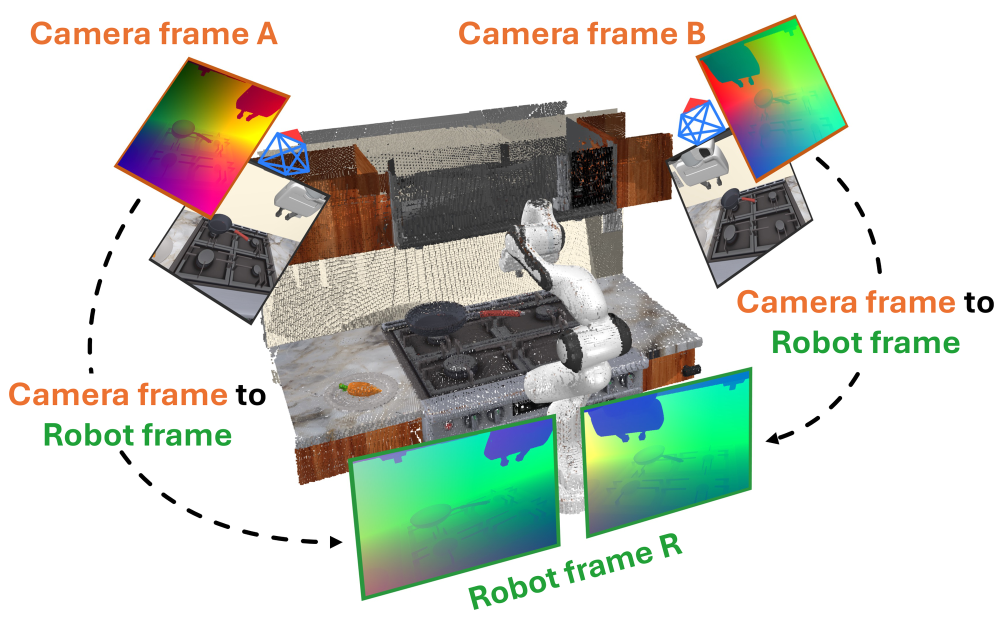
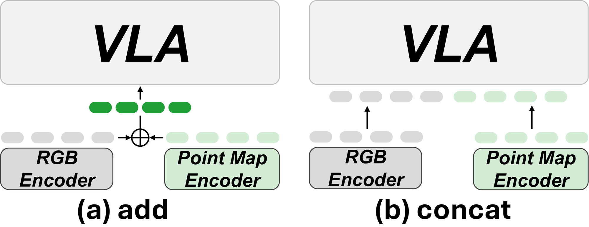
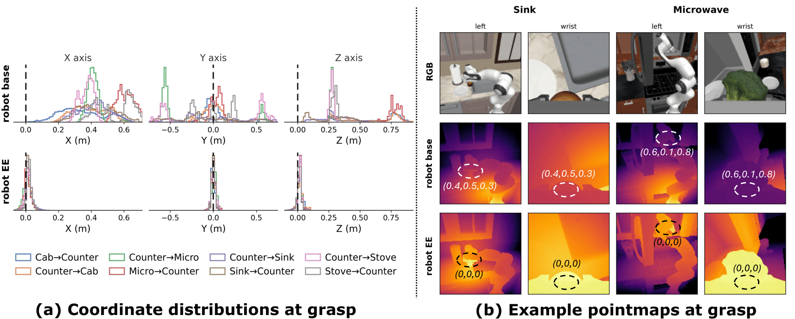

Large-Scale Robot Data Spans Many Camera Viewpoints, but Actions Are Defined in the Robot Frame
Third-person camera viewpoints in DROID (subsampled); brighter colors indicate regions of
higher viewpoint density. Figure from DROID.
Large-scale robot datasets aggregate demonstrations collected across labs and episodes,
often from different camera viewpoints. DROID, for example, contains 1,417 unique
third-person viewpoints.
Why does this viewpoint variation matter?
A VLA receives visual observations tied to the camera frame, while the action labels in
robot datasets are defined in a robot-centric coordinate frame, creating an
observation-to-action frame mismatch.
As the viewpoint changes, each observation is expressed in a different camera frame, while
the action labels remain expressed in the same robot-centric frame. The policy must
therefore learn how observations from multiple camera frames map to robot-frame actions.
With a fixed camera, this mapping remains consistent across demonstrations. When the
training data spans many viewpoints, however, the policy must generalize this mapping
across camera frames, making it harder to learn. To test this, we conduct a controlled
study on 24 RoboCasa tasks. Using a π-style model initialized from a base PaliGemma
checkpoint, we vary only the amount of camera viewpoint randomization across training
demonstrations while keeping the remaining training and evaluation settings fixed.
−9.6 points
RGB-only degrades as training-time viewpoint variation increases.
Solution
Bridge Camera-Frame Observations and Robot-Frame Actions with Robot-Centric Pointmaps
Rather than asking the policy to learn how each camera frame maps to robot-frame actions,
we express the observed 3D geometry from different viewpoints in a shared robot frame.
This gives the policy a consistent geometric coordinate system across diverse camera viewpoints.
Robot-centric pointmaps bridge this frame mismatch while preserving the image-form
representation used by pretrained VLAs.
Robot-frame geometry. Each pixel stores the 3D coordinate of its corresponding scene point in the frame where robot actions are defined.
Image-form structure. The dense H × W grid is preserved, maintaining spatial correspondence with RGB.

A robot-centric pointmap stores robot-frame XYZ coordinates at the corresponding image pixels,
preserving the same dense H × W grid as RGB.
The whole method: one extra encoder and one element-wise addition.
Full architecture. Each camera's pointmap is encoded by a second image encoder, initialized from the RGB encoder, and added element-wise to the RGB tokens right next to it. Nothing else in the VLA changes.
Results
Pointmaps Keep the Policy Robust as Training-Time Viewpoint Variation Increases
Adding pointmaps to the same controlled study changes the trend: RGB + Pointmap drops by
only 1.8 points, compared with 9.6 points for RGB-only.
−9.6 points
RGB-only degrades as training-time viewpoint variation increases.
+3.1 → +10.9 points
The pointmap advantage over RGB-only widens as training-time viewpoint variation increases.
Pointmaps Improve Both Pretrained VLA Backbones
On RoboCasa (24 tasks, 50 human demonstrations each), pointmaps improve both pretrained backbones:
+7.6 points on π0.5 and +4.2 points on SmolVLA.
55.3 → 62.9
π0.5 average success with pointmaps (+7.6).
37.2 → 41.4
SmolVLA average success with pointmaps (+4.2).
With π0.5, pointmaps reach 62.9% average success, outperforming all
camera-aware, 3D-augmented, and point-cloud baselines.
Method
Category
Backbone
Avg. SR
FP3
Point-cloud policy
–
42.8
π0.5
–
π0.5
55.3
OC-VLA
Camera-aware VLA
π0.5
56.3
KYC
Camera-aware VLA
π0.5
59.1
GeoVLA
3D-augmented VLA
π0.5
57.1
PointVLA
3D-augmented VLA
π0.5
57.3
π0.5 + Pointmap (ours)
Ours
π0.5
62.9
FP3 is a DROID-pretrained point-cloud policy without a VLA backbone.
Per-task-category results are in the paper.
On a Real Robot, the Gap Widens at an Unseen Camera Viewpoint
We collect 180 demonstrations over four tasks on a FR3 while repositioning the
external camera across three training viewpoints. We then evaluate the policies at one seen
viewpoint and at a held-out viewpoint not observed during training.
At evaluation, the external camera is placed either at one of the training viewpoints
(seen) or at a held-out viewpoint not used for data collection (unseen).
Pointmaps improve performance at both camera viewpoints, but the advantage grows from
+5.0 points at the seen viewpoint to +11.7 points at the unseen viewpoint.
By expressing observed geometry in the robot frame, pointmaps provide a more consistent
spatial representation when the external camera moves beyond the training viewpoints.
73.3 → 78.3
Seen camera viewpoint, π0.5 → π0.5 + pointmap (+5.0).
55.0 → 66.7
Unseen camera viewpoint, π0.5 → π0.5 + pointmap (+11.7).
Real-world success rate (%), 15 rollouts per task per camera viewpoint. DP3 is a from-scratch point-cloud diffusion policy, unlike FP3 in the simulation table (a DROID-pretrained point-cloud foundation policy).
Eval. viewpoint
Model
Avg.
Pick-and-place
Stack blocks
Open drawer
Close drawer
Seen
DP3
63.3
60.0
40.0
60.0
93.3
π0.5
73.3
80.0
53.3
73.3
86.7
π0.5 + pointmap
78.3
86.7
60.0
73.3
93.3
Unseen
DP3
48.3
33.3
33.3
40.0
86.7
π0.5
55.0
40.0
26.7
66.7
86.7
π0.5 + pointmap
66.7
53.3
46.7
73.3
93.3
Per-Task Videos, From Training Views to Unseen-Viewpoint Rollouts
The top row shows one training
demonstration from each training viewpoint, seen from the policy's external input camera.
The rows below show evaluation rollouts at the unseen viewpoint, recorded from a separate
fixed camera, comparing π0.5 and π0.5 + Pointmap. All clips
play at 2× speed.
Training demonstrations, three camera viewpoints
Train view 1
Train view 2
Train view 3
Evaluation rollouts, unseen viewpoint
π0.5 ✗
π0.5 ✗
π0.5 ✗
π0.5 + Pointmap ✓
π0.5 + Pointmap ✓
π0.5 + Pointmap ✓
Training demonstrations, three camera viewpoints
Train view 1
Train view 2
Train view 3
Evaluation rollouts, unseen viewpoint
π0.5 ✗
π0.5 ✓
π0.5 ✗
π0.5 + Pointmap ✓
π0.5 + Pointmap ✓
π0.5 + Pointmap ✓
Training demonstrations, three camera viewpoints
Train view 1
Train view 2
Train view 3
no drawer demos at this viewpoint
Evaluation rollouts, unseen viewpoint
π0.5 ✗
π0.5 ✗
π0.5 ✓
π0.5 + Pointmap ✓
π0.5 + Pointmap ✓
π0.5 + Pointmap ✓
Training demonstrations, three camera viewpoints
Train view 1
Train view 2
Train view 3
no drawer demos at this viewpoint
Evaluation rollouts, unseen viewpoint
π0.5 ✗
π0.5 ✓
π0.5 ✓
π0.5 + Pointmap ✓
π0.5 + Pointmap ✓
π0.5 + Pointmap ✓
Ablation Studies
Why does the design look the way it does? Each choice is backed by its own controlled ablation
on RoboCasa. The backbone and training recipe stay fixed, and only the 3D input changes.
For these controlled studies, we use a model without robot pretraining to isolate the effect of
each input design. Its success rates are therefore lower than those of the pretrained VLAs
evaluated later.
1Pre-compute Robot-Frame Geometry▼
Plücker rays describe the camera geometry, and depth provides per-pixel distance. RGB + Plücker + Depth therefore contains the information needed to obtain robot-frame geometry, but leaves it for the policy to infer. Providing robot-frame geometry directly as a pointmap improves success from 31.6% to 34.7%.
Input
Robot-frame geometry
SR
RGB
not provided
27.9
RGB + Plücker
not provided
28.7
RGB + Plücker + Depth
left to the policy
31.6
RGB + Pointmap
provided directly
34.7
2Preserve the Image Grid▼
Pointmaps outperform point-cloud inputs while preserving the dense image grid used by the VLA. Because RGB and pointmap tokens share the same spatial layout, element-wise addition further improves success from 30.7% to 34.7%.
3D input
Encoder
Fusion
SR
None
–
–
27.9
Point cloud
MLP
concat
24.2
Point cloud
PTv3
concat
32.8
Pointmap
image encoder
concat
30.7
Pointmap
image encoder
add
34.7

3Center Geometry at the End Effector▼
Centering the pointmap at the current end-effector position reduces variation caused by absolute workspace location, making similar interactions appear in a more consistent local coordinate system. It improves success under both fixed and randomized evaluation viewpoints.
Pointmap origin
Fixed eval.
Randomized eval.
Drop
Robot base
34.7
32.7
−2.0
End effector
36.9
36.6
−0.3

BibTeX
@article{lee2026seelikearobot,
title = {See like a Robot: Robot-Centric Pointmaps for Vision-Language-Action Models},
author = {Lee, Byungkun and Hwang, Dongyoon and Park, Minho and Lee, Hojoon and Kim, Dongjin and Choo, Jaegul},
journal = {arXiv preprint},
year = {2026}
}